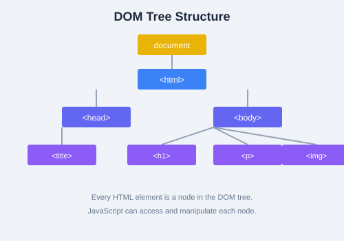

The Document Object Model (DOM) is JavaScript's interface to HTML. It lets you read, modify, and react to every element on the page.
The DOM represents an HTML document as a tree of objects. Each HTML element is a node that can be accessed and manipulated with JavaScript. The document object is the root of this tree.
document ObjectThe document object provides access to the entire page:
console.log(document.title); // Page title
console.log(document.URL); // Current URL
console.log(document.body); // <body> element
console.log(document.documentElement); // <html> elementconst header = document.getElementById("main-header");Use CSS-style selectors for flexible element selection:
// Returns the first match
const firstButton = document.querySelector(".btn");
// Returns all matches as a NodeList
const allButtons = document.querySelectorAll(".btn");
// Complex selectors
const navLinks = document.querySelectorAll("nav a.active");getElementById is faster than querySelector, but querySelector is more flexible. Use whichever is more readable for your use case.
Move between nodes once you have a reference:
const parent = element.parentNode;
const children = element.children; // HTMLCollection
const firstChild = element.firstElementChild;
const lastChild = element.lastElementChild;
const nextSibling = element.nextElementSibling;
const prevSibling = element.previousElementSibling;const el = document.querySelector("#output");
// Change text (safer  prevents XSS)
el.textContent = "New text content";
// Change HTML (use with caution)
el.innerHTML = "<strong>Bold text</strong>";
// Change attributes
el.setAttribute("class", "highlight");
console.log(el.getAttribute("class"));
// Work with classes
el.classList.add("active");
el.classList.remove("inactive");
el.classList.toggle("visible");
console.log(el.classList.contains("active"));// Create a new element
const newDiv = document.createElement("div");
newDiv.textContent = "I was created by JavaScript!";
newDiv.classList.add("box");
// Insert it into the DOM
document.body.appendChild(newDiv);
// Insert at a specific position
const reference = document.querySelector("#container");
reference.insertBefore(newDiv, reference.firstChild);
// Remove an element
const oldEl = document.querySelector(".old");
oldEl.remove(); // Modern approach
// oldEl.parentNode.removeChild(oldEl); // Legacy approachReact to user interactions with addEventListener:
const button = document.querySelector("#myButton");
button.addEventListener("click", function(event) {
console.log("Button clicked!", event);
});
// Common events: click, mouseover, mouseout, keydown, keyup,
// submit, focus, blur, change, scroll, resizeThe event object provides details about the event:
document.querySelector("a").addEventListener("click", function(e) {
e.preventDefault(); // Stop default behavior (navigation)
console.log("Target:", e.target);
console.log("Type:", e.type);
console.log("Coordinates:", e.clientX, e.clientY);
});Events flow through the DOM in three phases:
document down to the targetdocument// Stop propagation
element.addEventListener("click", function(e) {
e.stopPropagation(); // Prevents bubbling
});
// Use capturing phase instead of bubbling
element.addEventListener("click", handler, true);
// Third parameter: true = capture, false (default) = bubble
e.stopPropagation() stops the event from moving further in the propagation chain. e.stopImmediatePropagation() also prevents other listeners on the same element from firing.
<li> element, add it to a <ul>, and clear the input. Add a click event on each <li> that toggles a completed class (which strikes through the text).